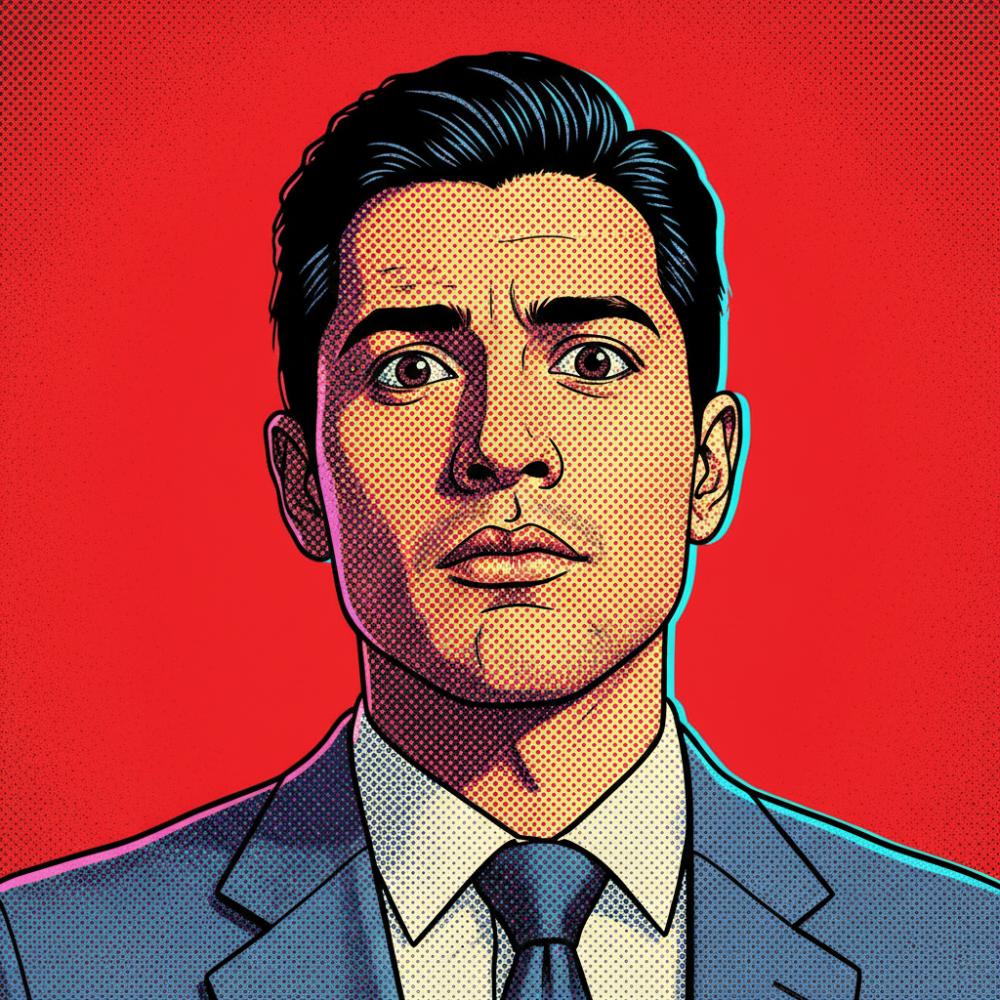
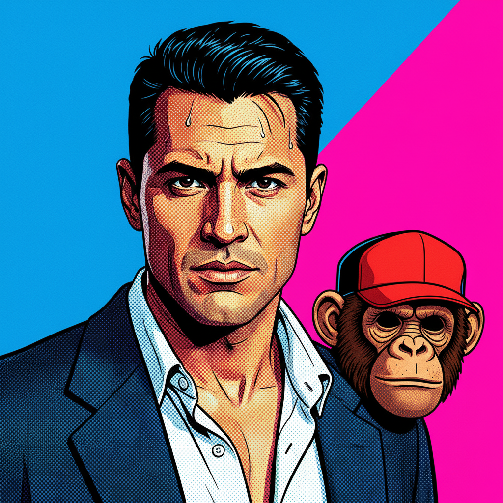
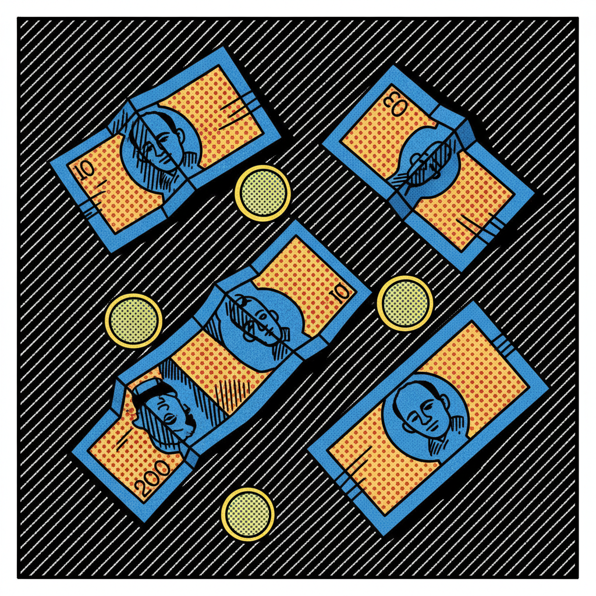
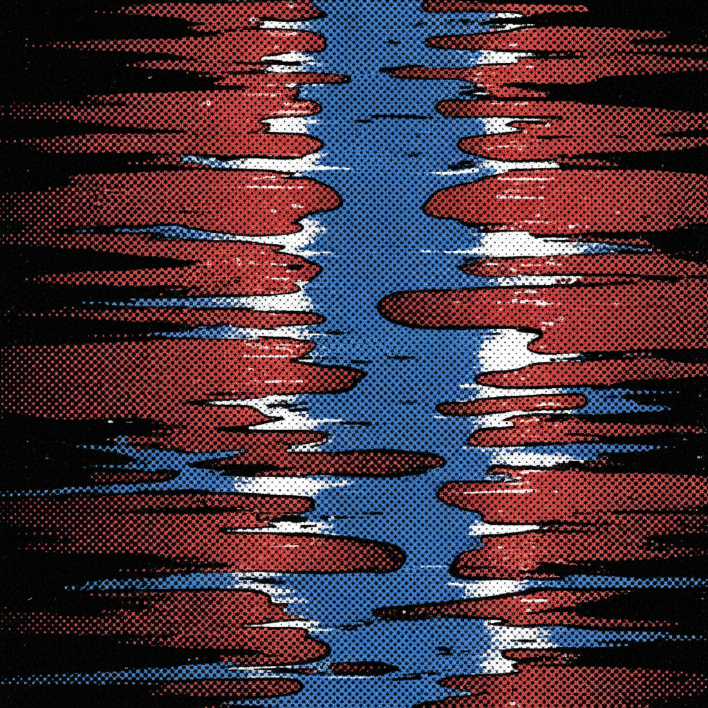
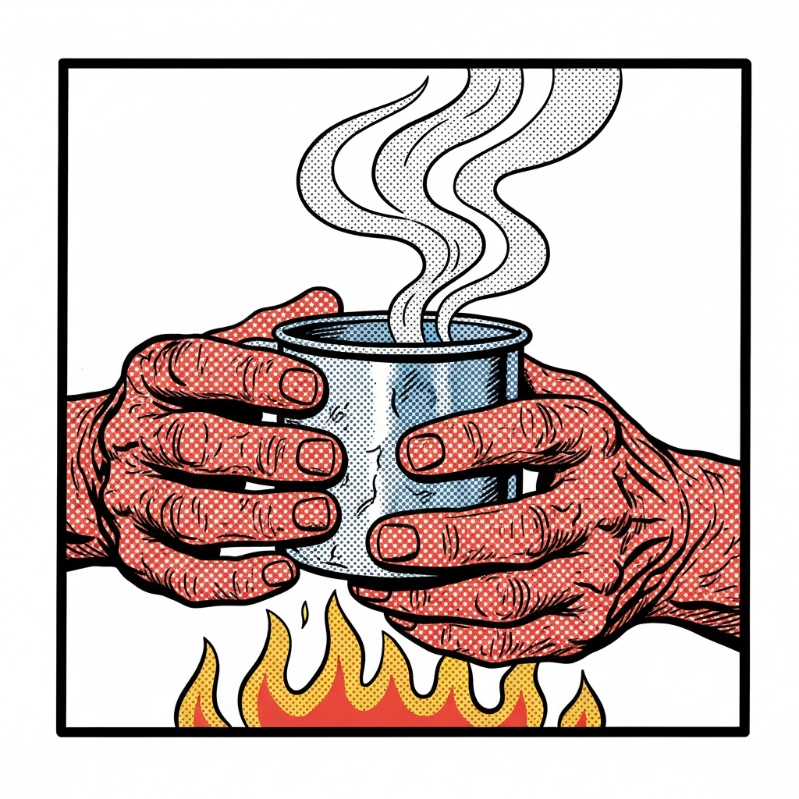
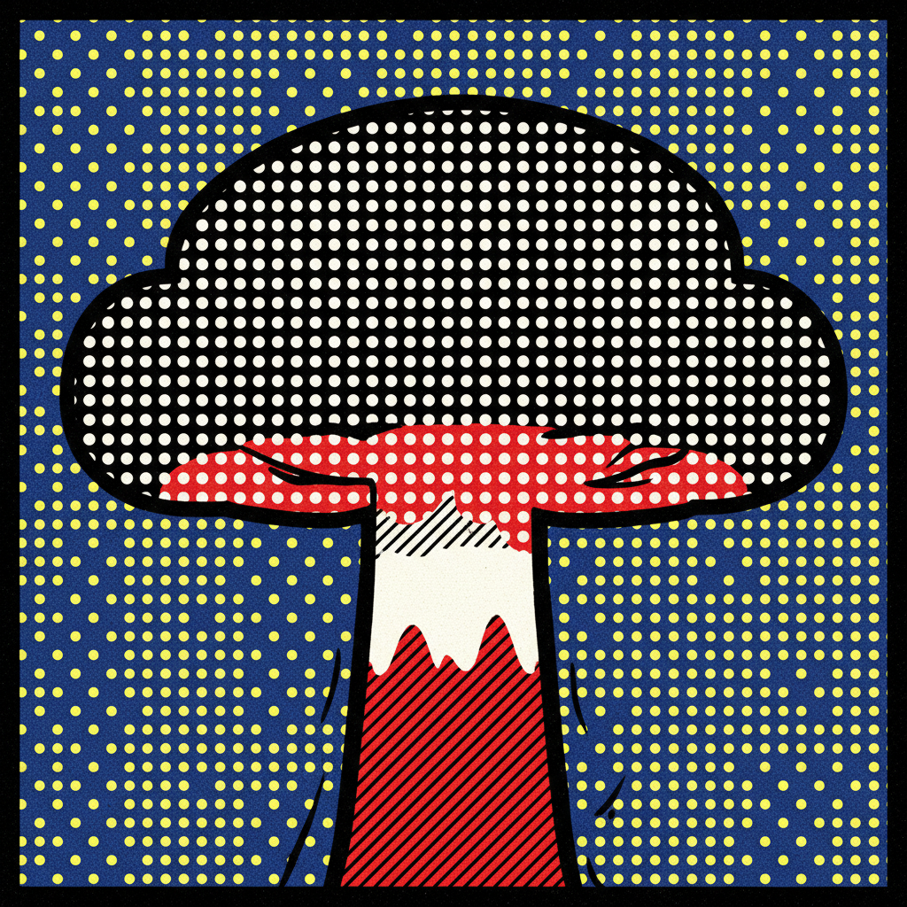
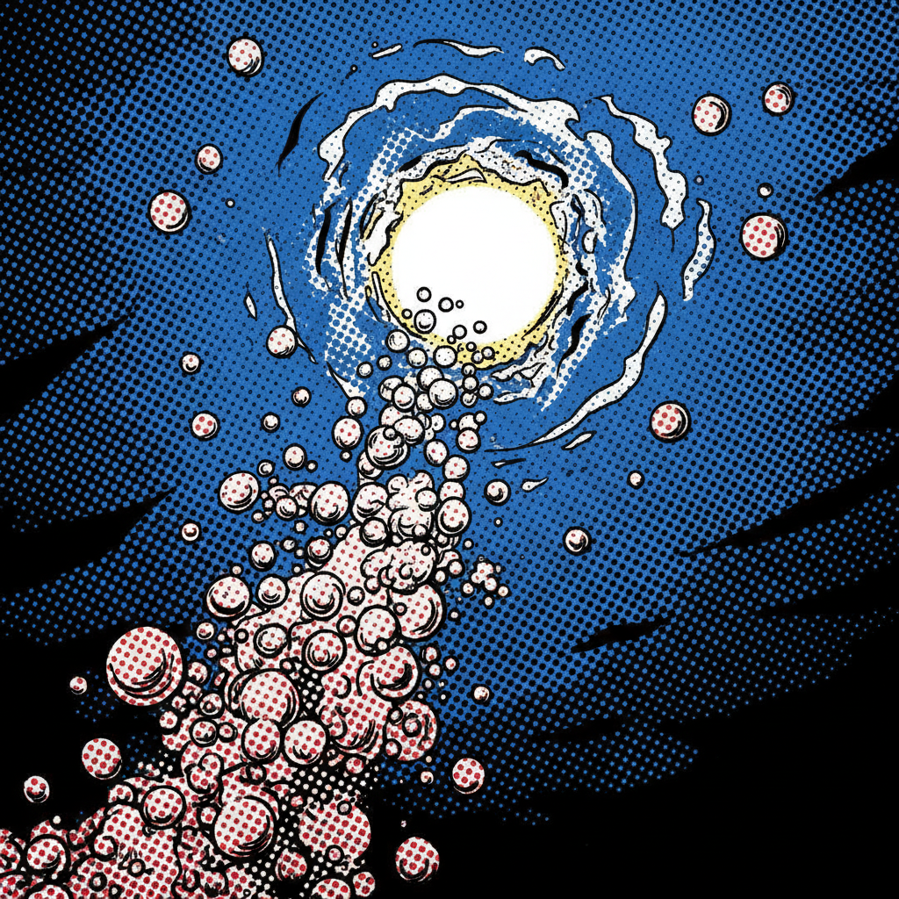
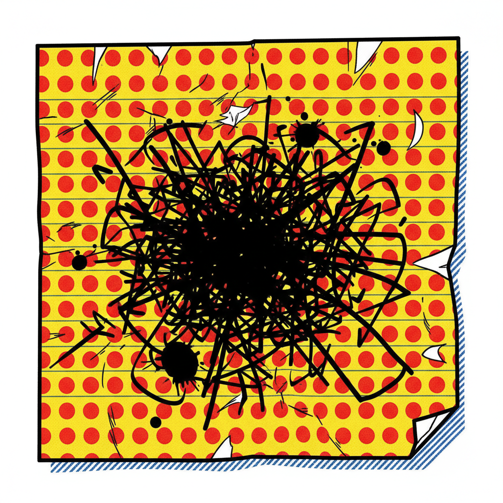

«Esto lo soñé. Tal cual. Sin metáforas, sin adornos.
Lo que vas a leer pasó dentro de mi cabeza
y se sintió más real que tu puta realidad.»
El Plan
de Hucho
Kilómetro 40. Dentro de 3 noches.
No llegues tarde esta vez, cabrón.
— H.
Soñé con Hucho tres noches seguidas antes de que apareciera la caja.
Esto no es ficción. Es un recuerdo que todavía no ha ocurrido.
Si estás leyendo esto, ya valió madres. No hay vuelta atrás, cabrón.

PACO NARRASoñé con Hucho tres noches seguidas antes de que apareciera la caja. La primera noche me habló desde el fondo de una alberca vacía, con una voz que se sentía como fiebre — de esas cosas que no te dicen con palabras pero que se te quedan pegadas en el pecho y no hay forma de sacártelas.
La segunda noche estaba sentado en mi cama cuando desperté. O creí despertar. Olía a gasolina y a copal, esa mezcla que solo existe en los mercados de Tepito a las seis de la mañana cuando los puestos abren y el mundo todavía no ha decidido si vale la pena seguir girando.
La tercera noche no soñé nada. Y eso fue peor. Porque el silencio de Hucho pesaba más que su voz.
Tres pinches noches soñando con ese güey. No me dijo nada con palabras — me lo instaló en el cuerpo como un virus. El golpe ya estaba decidido. Solo faltaba que mi culo cobarde se presentara.
Un martes llegó una caja. Sin remitente. Sin nota. Adentro: una gorra-máscara de chimpancé café. Del tipo que te cubre toda la cabeza, pero con una visera roja en el cuello — te la pones como gorra y cuando la necesitas la jalas hacia abajo y te tapa la cara completa. Chingona, la neta.
Me puse el traje azul grisáceo — el único que tengo, bien ejecutivo, el que he usado en bodas de primos que ya se divorciaron y en funerales que prefiero no recordar. Ese traje ha visto más fracasos que éxitos. Perfecto para esto.
La máscara olía a plástico nuevo y a sudor viejo, como si alguien la hubiera usado antes en otro sueño, en otro intento fallido de romper la máquina.

HUCHO NARRALe mandé la máscara sin nota porque las notas se pueden rastrear. Sin remitente porque los remitentes se pueden interrogar. Si Paco necesitaba una explicación para ponérsela, entonces no era el indicado. Pero yo sabía que se la iba a poner. Los cobardes siempre se ponen la máscara — es a lo único que no le tienen miedo, a dejar de ser ellos mismos.
Me temblaban las manos cuando cerré la caja. Le puse la cinta adhesiva y no podía cortar derecho — las tijeras me resbalaban de los dedos. Tenía la camisa empapada de sudor y la boca seca. Mi voz, si alguien me hubiera hablado en ese momento, habría salido como un hilo. Débil. Patética. Pero las manos que tiemblan son las que aprietan más fuerte el gatillo.
Era sábado. El edificio estaba vacío. Solo el zumbido de los aires acondicionados y el eco de mis pasos en el mármol.
Era sábado. El edificio estaba vacío, las luces apagadas en su mayoría. Solo el zumbido de los aires acondicionados y el eco de mis pasos en el mármol. El piso reflejaba mi cara de chimpancé como un espejo sucio.
Entré con la máscara puesta. Así, a lo pendejo, con la cara de chimpancé desde la puerta principal. Subí por las escaleras hasta el piso 22. Veintidós pisos. Los conté. Cada escalón era un latido.
Piso 22. Oficinas vacías. Luces apagadas. Y ahí estaba Hucho, sentado en una silla giratoria como si fuera el CEO de la revolución. Llevaba horas ahí — tenía el saco abierto, la camisa desabotonada, sudor en la frente. La máscara de chimpancé tirada en el piso junto a él.
Me saludó sin mucho afán, como quien saluda a un compañero de trabajo del que se espera sea competente. Sin drama. Sin discurso. Solo un «llegaste» seco.
Llegaste. Agarra la mochila. Esto no se va a vaciar solo.
Llevaba cuatro horas sentado en esa silla esperándolo. Cuatro horas con el estómago hecho nudo, las manos sudadas empapando los descansabrazos, y un tic en el párpado izquierdo que no me paraba. Cada ruido del edificio — el aire acondicionado, una puerta cerrándose tres pisos abajo — me hacía brincar como un gato.
Pero cuando llegó Paco, me vio calmado. Así funciona esto: el miedo se esconde en la autoridad. Si tú tiemblas, todos tiemblan. Si tú te sientas como si fueras dueño del edificio, el edificio te cree.
La verdad es que vomité dos veces antes de que llegara. Mi voz era débil — me la aclaré tres veces antes de decir «llegaste» para que sonara seco, firme, de jefe. Pero por dentro era gelatina. Pura pinche gelatina.
No era una caja fuerte, no era la bóveda de película que uno imagina. Era una especie de caja registradora glorificada. La abrimos y ahí estaba: 72,000 pesos. No era el golpe soñado, pero era todo el capital de la empresa. La hundiríamos hasta el fondo. Los vaciamos en una mochila negra tech-wear.
72,000 pinches pesos. No era la revolución. Era una herida pequeña en un cuerpo enorme. Pero las heridas pequeñas también infectan. Pregúntale a cualquier diabético.

Al forzar la caja se activó una alarma silenciosa — una lucecita roja que ninguno de los dos vio hasta que ya era tarde. Eso no estaba en el plan. O si estaba, Hucho se lo guardó.
Entonces escuchamos las sirenas. A lo lejos, pero acercándose. Hucho ni se inmutó.
EL PLAN DE HUCHO
PLAN A B
-
Entrar al edificio juntos. Subir al piso 22.
Paco entra solo. Yo llego antes y espero adentro — si nos ven llegar juntos, somos una conspiración. Si llegamos separados, somos dos pendejos con mal timing. -
Ponerse la máscara al entrar.
La máscara es solo para las cámaras. NO para la calle. (Paco, si estás leyendo esto: NO te la pongas en la calle.) -
Abrir la caja. Salir juntos por la puerta trasera con el dinero.
Vaciamos la caja en la mochila tech-wear. 72 mil pesos. No es mucho pero es todo lo que tienen. -
Tomar un taxi pirata juntos hasta el kilómetro 40. Desaparecer antes del lunes.
Salimos por rutas separadas. Yo por las escaleras de emergencia. Paco por donde pueda — ese güey siempre improvisa. - Punto de encuentro: Kilómetro 40. Carretera federal. Campamento de la resistencia.
- Si algo sale mal — y algo siempre sale mal — no me esperes. Yo te encuentro.
Tiempo estimado: 45 minutos.
Probabilidad de que Paco la cague: 100%.
Si estás leyendo esto, el plan ya empezó.
No hay vuelta atrás, cabrón.
— H.
Las autoridades han sido alertadas. ¿Viste algo raro cuando entraste?
No, nada raro.
¿Entraste con la máscara puesta?
...Sí.
Eso fue un error, Paco. Alguien entrando a un banco con una máscara de chimpancé un sábado levanta sospechas hasta en este país. La máscara era para adentro. Para las cámaras. No para pasearte en la calle como si fuera pinche Halloween.
No le grité. Quería gritarle. Quería agarrarlo del cuello y estrellarlo contra la pared. Me sudaban las manos. Las rodillas me temblaban debajo del escritorio donde Paco no podía verlas. Sentía el pulso en las orejas — tan fuerte que casi no escuché las sirenas acercándose.
Pero el coraje es un lujo de la gente que no tiene miedo, y yo tengo miedo todo el puto tiempo. Así que hice lo que hacen los que tienen miedo: calcular. Recalcular. El plan B ya estaba corriendo en mi cabeza antes de que Paco terminara de decir «sí».
Lo peligroso de mí no es que sea valiente. Es que el miedo me hace más preciso.
Hucho se marchó por las escaleras de emergencia. Calmado. Sin correr. Como si saliera de la oficina un viernes cualquiera.
Yo me metí en el ducto del aire acondicionado. Ahí, acostado en la oscuridad, con la mochila de 72,000 pesos pegada al pecho y el sonido de las sirenas subiendo por las calles, esperé. Sabíamos que se irían pronto — no había sospechas de robo aún.
El dinero es el lenguaje del control. Cada billete es una orden: trabaja, consume, obedece, muere. El asalto no es un crimen — es una corrección gramatical en un idioma que nadie pidió hablar.
El sistema no se reforma. Se interrumpe. Y toda interrupción empieza con alguien lo suficientemente pendejo como para creer que un chimpancé de plástico puede cambiar el mundo.
Los que corren son culpables. Los que caminan son invisibles.
Las sirenas se alejaron. Esperé una hora más en el ducto del aire acondicionado. O dos. O diez minutos. En la oscuridad el tiempo no existe, solo existe tu respiración y el sudor que te corre por la espalda.
Salí del edificio por la puerta trasera. La máscara enrollada como gorra. El traje arrugado a la chingada. La mochila tech-wear con 72 mil pesos pegada al cuerpo. Caminé. No corrí. Hucho me lo había dicho: los que corren son culpables, los que caminan son invisibles.
Caminé por la carretera. Era de noche pero no tarde aún. Los árboles a los lados se veían bien pinches siniestros, todos negros y quietos, como si supieran algo que yo no.
Un perro callejero me miró con la misma cara de lástima que pone el güey del OXXO cuando pagas con monedas de a peso.

Las sirenas no se callaban. Se me metían en la cabeza y no las podía sacar. Los semáforos parpadeaban y yo sentía que cada luz roja era para mí. Una señora con bolsas del súper me miró raro y yo le sonreí detrás de la gorra de chimpancé como un pinche maniático.
En algún punto de la caminata dejé de saber quién chingados era yo. ¿Estaba caminando Paco o estaba caminando Hucho? ¿O somos el mismo animal con dos nombres y yo nomás no me he dado cuenta?
Me sentía seguido. A cada rato volteaba y no había nadie. Solo mi sombra arrastrándose atrás de mí como un cómplice más cobarde que yo.
Si me atrapan... verga... si me atrapan... No. No pienses en eso. La palabra «si» es para cobardes. Camina, Paco. Camina y no voltees.
Separarnos fue lo correcto. El miedo de Paco lo hace predecible — y lo predecible es útil cuando necesitas que alguien camine en línea recta por una carretera oscura sin hacer pendejadas. El plan B ya estaba en marcha desde que entró al banco con la máscara puesta. Yo siempre tengo un plan B. El plan A es para optimistas. El plan B es para los que conocen a Paco.
El campamento apareció como aparecen las cosas importantes: sin aviso, sin lógica, al borde de una carretera que no lleva a ningún lado.
Caminé por la carretera hasta que los pies dejaron de ser pies y se convirtieron en dos pedazos de carne que arrastraba por inercia. La noche tenía ese color sucio del Valle de México — ni oscura ni clara, como todo en este país: a medias.
El campamento apareció como aparecen las cosas importantes: sin aviso, sin lógica, al borde de una carretera que no lleva a ningún lado. Cinco carpas, dos fogatas, un perro flaco, y el olor a café instantáneo mezclado con mariguana y algo que podría ser esperanza o solo humedad.
Una resistencia anti-sistema. O eso decían ellos. Yo vi gente cansada sentada alrededor de un fuego, igual que hace diez mil años, solo que en lugar de cazar mamuts estaban huyendo de Hacienda. Hillbillies con escopetas oxidadas. Gente sin mucha educación pero lista para la acción. De esos cabrones que no le saben a la teoría pero le saben a la chinga.
Maestras rurales que fumaban sus ideas y exhalaban utopías. Un predicador evangélico que había perdido la fe pero no la voz, y usaba ambas ausencias para gritar en la madrugada cosas que nadie entendía pero todos sentían.
Y el viejo sin dientes. Se llamaba — o decía llamarse — Don Refugio. Me ofreció café en un jarro de peltre abollado que parecía haber sobrevivido a la Revolución, la verdadera, la de 1910.
¿Tú también huyes de algo, viejo?
Yo no huyo, muchacho. Yo espero. Que es peor. El que huye al menos tiene dirección. El que espera solo tiene fe, y la fe es la enfermedad más contagiosa del chingado mundo.

Km 40. No confíes en el del sombrero. La maestra sabe dónde está la avioneta. El misil es real.
— H.
No llegué al campamento porque no podía llegar al campamento. Había tres retenes entre la ciudad y el kilómetro 40, y mi cara ya estaba en alguna cámara de seguridad del piso 22. La paranoia no es paranoia cuando te están buscando — es cálculo de supervivencia.
Mandé la nota con la maestra porque las maestras rurales son las únicas personas en este país que cruzan retenes sin que nadie les revise la mochila.
El riesgo de no llegar era menor que el riesgo de llevarles a la policía de regalo. A veces cuidar a tu gente significa no estar con tu gente.
Hucho no llegó esa noche. Ni la siguiente. El asunto estaba caliente, decían. Tardaría dos días más. Me quedé junto a la fogata escuchando las historias de esa gente, con los 72,000 pesos debajo de mi cuerpo como un colchón ideológico.
Pensé en todas las revoluciones que fracasaron. Son todas. Todas fracasaron. Pero el fracaso de una revolución dura más que el éxito de cualquier gobierno. ¿Eso nos hace héroes o pendejos? La respuesta, sospecho, es sí.
Primero el sonido. Un desgarro en la tela del cielo.
Primero el sonido.
Un sonido hipersónico. Un desgarro en la tela del cielo.
Un ICBM cruzó la noche a una velocidad de la chingada, en dirección a la ciudad.
No hubo pausa. No hubo tiempo de reflexión. En un segundo había llegado.
La ciudad se veía a lo lejos desde la colina. Primero la noche se volvió día.
Después llegó la onda de choque. Los árboles se sacudieron como si dios los hubiera agarrado a madrazos.

Vi la luz desde donde estaba — a kilómetros del campamento, atrapado entre retenes, escondido en la cajuela de un taxi pirata. El cielo se abrió en blanco y supe que el mundo se había acabado antes de que el plan empezara.
Esto no estaba en el plan. Nada de esto estaba en el puto plan. Yo planeé un asalto, no el fin del mundo. Pero así funciona el universo: tú le robas 72 mil pesos a una empresa y el universo te responde con un misil intercontinental. Proporción divina.
Me oriné. Ahí acostado en esa cajuela, viendo la luz blanca filtrarse por las rendijas, me oriné como un niño de tres años en su primera tormenta. Y eso, por alguna razón, me calmó. Porque cuando ya no te queda dignidad, tampoco te queda miedo. Y sin miedo, puedo pensar. Y cuando pienso, soy peligroso.
El silencio de un motor en el aire es la cosa más aterradora del puto universo.
Me trepé en la avioneta junto a otros cuatro. Un Cessna del 78 que había visto mejores décadas. El piloto — un güey que se hacía llamar Cóndor pero que tenía más pinta de paloma mojada — gritó algo sobre la dirección pero ya estábamos en el aire. Sin plan. Sin destino. Solo la urgencia animal de alejarse de la luz blanca.
El motor tosió. Primero una tos. Luego silencio. El silencio de un motor en el aire es la cosa más aterradora del puto universo.
Mi asiento estaba en dirección opuesta al movimiento de la avioneta. Así que cuando empezamos a caer, mi vista fue el cielo. Vi el cielo mientras caía. Las estrellas subiendo — o nosotros bajando — a una velocidad que no te da tiempo ni de mentarle la madre a dios.
Volteé a ver hacia abajo. Una mancha oscura. Enorme. En medio de la noche. Escuché al Cóndor gritar que íbamos en dirección a un lago. Por alguna razón la avioneta dio vuelta y caíamos de cabeza. Sin música, sin cámara lenta, sin un último flashback de tu vida. Solo la nariz del avión apuntando al agua y la certeza absoluta, cristalina, perfecta, de que esto es lo último.
El agua no salpicó — nos tragó. Golpeamos y aguanté la respiración. Pensé: si aguanto hasta que se detenga, puedo salir a la superficie. No hay pedo. Aguanto.
Pero la avioneta no se detuvo. Seguía bajando. Vi la tenue luz de la superficie apagarse conforme bajábamos más y más. Habíamos caído en el Baikal. Sin duda. Ese lago no tiene fondo.

Desperté sin estar respirando. No en un hospital. No en el cielo. No en el infierno. En mi cama. Con las sábanas empapadas de sudor y los ojos abiertos como dos agujeros en una máscara que ya no estaba ahí.
El reloj marcaba las 4:47 de la mañana. La ciudad zumbaba afuera con esa frecuencia baja de las cosas que nunca se detienen: el tráfico, la corrupción, el insomnio colectivo de veinte millones de personas que sueñan con ser libres y despiertan a ser empleados.
Me toqué la cara. Mi cara. Sin máscara. Sin chimpancé. Sin nada entre mi piel y el mundo. Y eso se sintió más desnudo que cualquier desnudez.
Pero en el bolsillo de mi pantalón — el pantalón con el que me dormí, el pantalón que no me puse en ningún sueño — encontré un papel doblado en cuatro.

Kilómetro 40. Esta noche.
No llegues tarde esta vez, cabrón.
— H.
Me quedé mirando el papel. Lo olí. Olía a gasolina y a copal.
¿Era un sueño... o un borrador?
Si fue un sueño, fue el sueño más real que he tenido. Si fue un plan, fue el plan más soñado que he vivido. La frontera entre ambas cosas se borró en algún punto entre el banco y el Baikal, entre la máscara y la cara, entre Paco y Hucho.
¿El plan era de Paco? ¿O Paco era parte del plan de Hucho? ¿Y si Hucho no existe? ¿Y si Hucho soy yo? ¿Y si yo soy el sueño de alguien más?
Kilómetro 40. Esta noche. No hay vuelta atrás cuando el borrador se convierte en tinta.
(el plan continúa... el plan siempre continúa... el plan es lo único que no se ahoga)